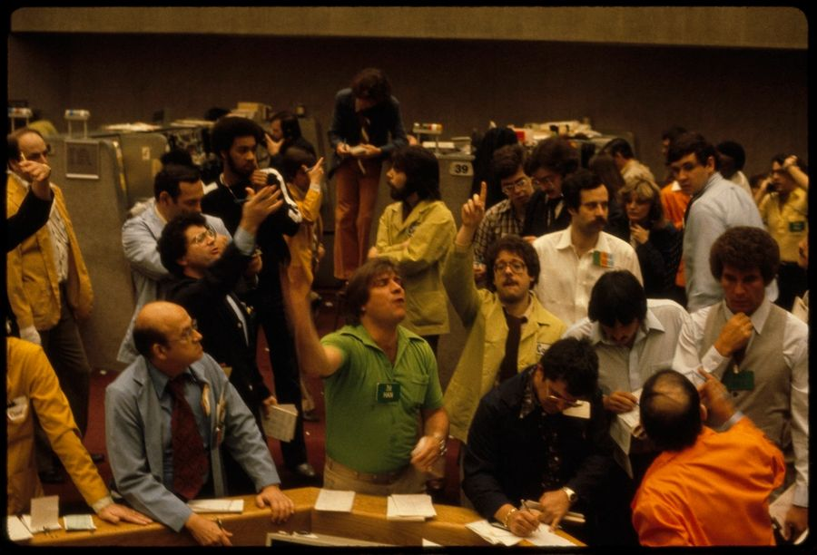
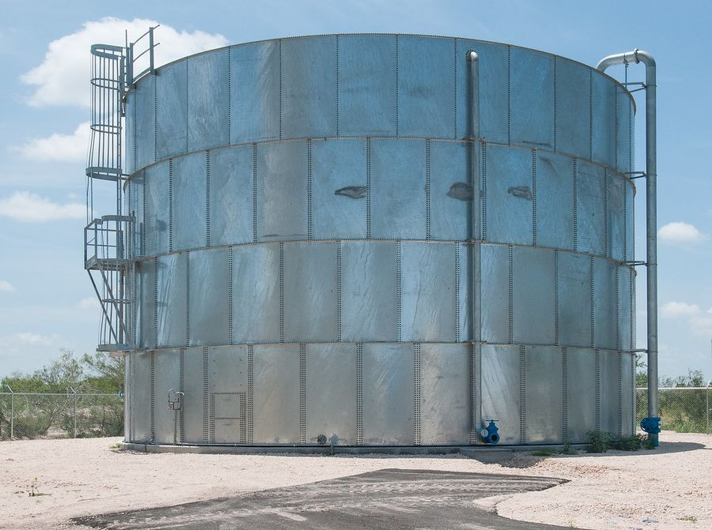
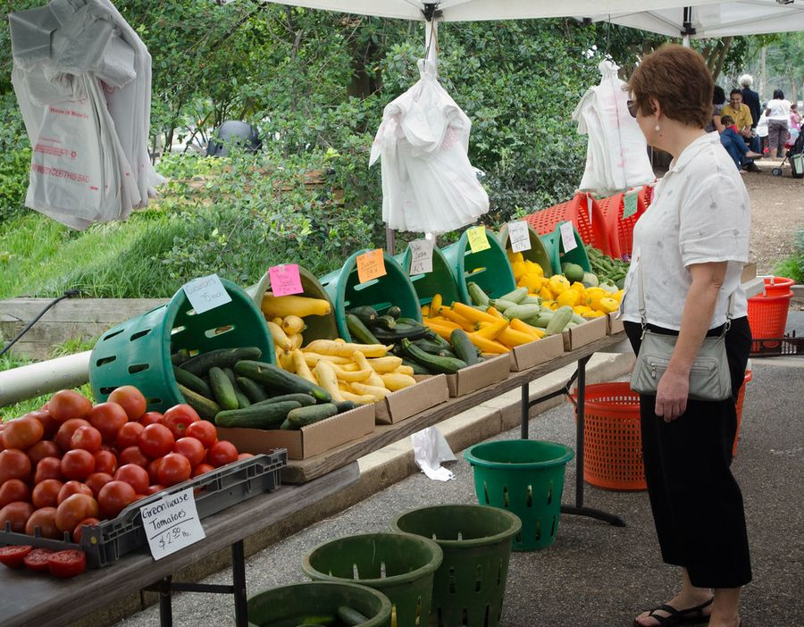

レイニルドのミスでサンダーランドの不振が続き、ヤギエロニアがヨーロッパリーグで引き分けを奪うReinildo error extends Sunderland woe as Jagiellonia grab Europa League drawヤギエロニア・ビャウィストクのヘッドコーチ、エイドリアン・シエミェニェツ氏は、プレミアリーグの相手と対戦するためのウェアサイドへのこの遠征が、最大のハイライトの一つだと語った。
レイニルドのミスでサンダーランドの不振が続き、ヤギエロニアがヨーロッパリーグで引き分けを奪うReinildo error extends Sunderland woe as Jagiellonia grab Europa League drawヤギエロニア・ビャウィストクのヘッドコーチ、エイドリアン・シエミェニェツ氏は、プレミアリーグの相手と対戦するためのウェアサイドへのこの遠征が、最大のハイライトの一つだと語った。 日常の必需品に関するブラックフライデーのお買い得品18件を見つけたWe found 18 Black Friday deals on the day-to-day essentials everyone usesこのブラックフライデーには地味な必需品を買いだめしよう——後で自分に感謝するはずだ。お気に入りのバスタオルがブラックフライデーでセール中。究極ガイドをご覧ください。
日常の必需品に関するブラックフライデーのお買い得品18件を見つけたWe found 18 Black Friday deals on the day-to-day essentials everyone usesこのブラックフライデーには地味な必需品を買いだめしよう——後で自分に感謝するはずだ。お気に入りのバスタオルがブラックフライデーでセール中。究極ガイドをご覧ください。 トーマス・フランクがクリスタル・パレスで初勝利、マクニールがレアル・ソシエダを下すThomas Frank earns first Crystal Palace win as McNeil cuts down Real Sociedadサッカーのシーズンはある瞬間を境に変わることがあり、トーマス・フランクはクリスタル・パレスのその瞬間が残り17分に訪れたここでの場面だったことを願うだろう。ママドゥ・サに正当にリードを許していた。
トーマス・フランクがクリスタル・パレスで初勝利、マクニールがレアル・ソシエダを下すThomas Frank earns first Crystal Palace win as McNeil cuts down Real Sociedadサッカーのシーズンはある瞬間を境に変わることがあり、トーマス・フランクはクリスタル・パレスのその瞬間が残り17分に訪れたここでの場面だったことを願うだろう。ママドゥ・サに正当にリードを許していた。 ケイレブ・ウィリアムズが決勝TDを投げ、ベアーズがサンクスギビングでライオンズを驚かせるCaleb Williams throws for game-winning TD as Bears stun Lions on Thanksgivingシカゴ・ベアーズ39-35デトロイト・ライオンズ。QBは残り3秒でオドゥンゼにTDパスを投げる。デトロイトの連勝は6試合で止まる。ケイレブ・ウィリアムズが逆転の6を投げた。
ケイレブ・ウィリアムズが決勝TDを投げ、ベアーズがサンクスギビングでライオンズを驚かせるCaleb Williams throws for game-winning TD as Bears stun Lions on Thanksgivingシカゴ・ベアーズ39-35デトロイト・ライオンズ。QBは残り3秒でオドゥンゼにTDパスを投げる。デトロイトの連勝は6試合で止まる。ケイレブ・ウィリアムズが逆転の6を投げた。 スティーラーズのオーナーがマイク・マッカーシーを支持し、アーロン・ロジャースの「不服従」を非難Steelers owner backs Mike McCarthy and attacks Aaron Rodgers’s ‘insubordination’アート・ルーニー2世はヘッドコーチに「100％の信頼」を寄せている。QBの激高は容認できないと主張。ピッツバーグ・スティーラーズのオーナー兼社長であるアート・ルーニー2世は、
スティーラーズのオーナーがマイク・マッカーシーを支持し、アーロン・ロジャースの「不服従」を非難Steelers owner backs Mike McCarthy and attacks Aaron Rodgers’s ‘insubordination’アート・ルーニー2世はヘッドコーチに「100％の信頼」を寄せている。QBの激高は容認できないと主張。ピッツバーグ・スティーラーズのオーナー兼社長であるアート・ルーニー2世は、 世界タイトルマッチで初の本格的な攻防、シンダロフが引き分けに踏みとどまるJavokhir Sindarov hangs on for draw in first real fight of world title match3局連続の引き分けで、タイトルマッチは1½―1½となった。シンダロフは39手目で残り8秒まで減った。グケシュ・ドマラジュは最初の休息日明けに白番で指す。グケシュ対シンダロフ戦のすべてクリスマス・トラクター・ランに特別な意味をもたらす赤ちゃんThe baby who gives Christmas tractor run special meaningアーサーの命をかけた闘いが、主催者マーティン・ブランドレスにとってクリスマス・トラクター・ランに個人的な意味を与えている。
世界タイトルマッチで初の本格的な攻防、シンダロフが引き分けに踏みとどまるJavokhir Sindarov hangs on for draw in first real fight of world title match3局連続の引き分けで、タイトルマッチは1½―1½となった。シンダロフは39手目で残り8秒まで減った。グケシュ・ドマラジュは最初の休息日明けに白番で指す。グケシュ対シンダロフ戦のすべてクリスマス・トラクター・ランに特別な意味をもたらす赤ちゃんThe baby who gives Christmas tractor run special meaningアーサーの命をかけた闘いが、主催者マーティン・ブランドレスにとってクリスマス・トラクター・ランに個人的な意味を与えている。 ベシクタシュ対ハポエル・ベエルシェバ戦での観客トラブルが外交問題に発展Crowd trouble at Besiktas v Hapoel Be’er-Sheva leads to diplomatic incidentトルコの外交トップがジョージアのカウンターパートと話す。ヨーロッパリーグの試合は、警察がスタンドに入ったため中断された。トルコの外交トップはジョージアのカウンター
ベシクタシュ対ハポエル・ベエルシェバ戦での観客トラブルが外交問題に発展Crowd trouble at Besiktas v Hapoel Be’er-Sheva leads to diplomatic incidentトルコの外交トップがジョージアのカウンターパートと話す。ヨーロッパリーグの試合は、警察がスタンドに入ったため中断された。トルコの外交トップはジョージアのカウンター ヨーロッパリーグ：ボーンマス、ディアキテの早期退場にもかかわらず10連勝Europa League: Bournemouth make it 10 wins in a row despite early red for Diakitéマルコ・ローゼ率いるチームが突破に近づく。ミランは逆転でオリンピアコスを破った。ボーンマスはヨーロッパへの自動突破資格の獲得に一歩近づいた
ヨーロッパリーグ：ボーンマス、ディアキテの早期退場にもかかわらず10連勝Europa League: Bournemouth make it 10 wins in a row despite early red for Diakitéマルコ・ローゼ率いるチームが突破に近づく。ミランは逆転でオリンピアコスを破った。ボーンマスはヨーロッパへの自動突破資格の獲得に一歩近づいた キャンベル・ライト、バイアスロンのワールドカップ種目で優勝した初のアメリカ人にCampbell Wright becomes first American to win World Cup biathlon eventライトはフィンランドでの開幕戦で「最高のパフォーマンス」を披露した。24歳の同選手はニュージーランドのロトルア生まれ。キャンベル・ライトは木曜日、初…となって歴史を作った。
キャンベル・ライト、バイアスロンのワールドカップ種目で優勝した初のアメリカ人にCampbell Wright becomes first American to win World Cup biathlon eventライトはフィンランドでの開幕戦で「最高のパフォーマンス」を披露した。24歳の同選手はニュージーランドのロトルア生まれ。キャンベル・ライトは木曜日、初…となって歴史を作った。 英国への純移民、パンデミック期を除き1997年以来の最低水準に低下Net migration to UK falls to lowest level since 1997 excluding pandemic最新の数字によると、英国への入国者数と出国者数の差は、6月までの1年間で77,000人だった。分析：英国の移民減少のうち、どれほどが
英国への純移民、パンデミック期を除き1997年以来の最低水準に低下Net migration to UK falls to lowest level since 1997 excluding pandemic最新の数字によると、英国への入国者数と出国者数の差は、6月までの1年間で77,000人だった。分析：英国の移民減少のうち、どれほどが エリック・カントナ：「カンフーキックについて後悔することがあるとすれば、別の場所を蹴りたかったということだ」Éric Cantona: ‘If I regret something about the kung fu kick, it’s that I would love to kick him in another place’新しいドキュメンタリーの公開を前に、反省の色を見せないマンチェスター・ユナイテッドの象徴が、イングランドサッカーとの深い絆と自らの暗い衝動について語る。「私は
エリック・カントナ：「カンフーキックについて後悔することがあるとすれば、別の場所を蹴りたかったということだ」Éric Cantona: ‘If I regret something about the kung fu kick, it’s that I would love to kick him in another place’新しいドキュメンタリーの公開を前に、反省の色を見せないマンチェスター・ユナイテッドの象徴が、イングランドサッカーとの深い絆と自らの暗い衝動について語る。「私は インターネットが遅い？ 自宅ネットワークを強化する最良のWi-Fi中継器とメッシュシステム ― テスト済みSlow internet? The best wifi extenders and mesh systems to boost your home network – testedストリーミング、ゲーム、在宅勤務に最速で最も信頼できるものを見つけるため、11機種の中継器とメッシュシステムをテストした • 最高のオフィスチェア
インターネットが遅い？ 自宅ネットワークを強化する最良のWi-Fi中継器とメッシュシステム ― テスト済みSlow internet? The best wifi extenders and mesh systems to boost your home network – testedストリーミング、ゲーム、在宅勤務に最速で最も信頼できるものを見つけるため、11機種の中継器とメッシュシステムをテストした • 最高のオフィスチェア ファイサル・イスラム：トランプ氏の新たな関税がそれほど脅威ではない理由Faisal Islam: Why Trump's new tariffs are less of a threat他の国々は、トランプ氏の最初の関税攻撃に対応して貿易の流れを変更し、今ではトランプ氏の任期の先を見据えている。
ファイサル・イスラム：トランプ氏の新たな関税がそれほど脅威ではない理由Faisal Islam: Why Trump's new tariffs are less of a threat他の国々は、トランプ氏の最初の関税攻撃に対応して貿易の流れを変更し、今ではトランプ氏の任期の先を見据えている。 ノッティンガムの男、パートナーに薬物を盛って性的暴行を加えた罪で懲役12年Nottingham man jailed for 12 years for drugging and sexually assaulting partner「堕落した」加害者は、自分が与えた睡眠薬の影響下にある被害者を襲った。男は、パートナーに薬物を盛ったことで懲役12年を言い渡された…
ノッティンガムの男、パートナーに薬物を盛って性的暴行を加えた罪で懲役12年Nottingham man jailed for 12 years for drugging and sexually assaulting partner「堕落した」加害者は、自分が与えた睡眠薬の影響下にある被害者を襲った。男は、パートナーに薬物を盛ったことで懲役12年を言い渡された… インファンティーノの売却計画が調査される中、FIFA職員が聴取への出席を求められるFifa staff asked to attend interviews as Infantino sell-off scheme investigated民主党がFIFAフォワード・エンタープライズのスキャンダルを調査へ インファンティーノは1月に証言のため召喚される可能性 FIFAの元職員と現職員の何人かは
インファンティーノの売却計画が調査される中、FIFA職員が聴取への出席を求められるFifa staff asked to attend interviews as Infantino sell-off scheme investigated民主党がFIFAフォワード・エンタープライズのスキャンダルを調査へ インファンティーノは1月に証言のため召喚される可能性 FIFAの元職員と現職員の何人かは トランプ氏、米中間選挙前に発表された経済指標は「偽物」と主張、しかし証拠は示さずTrump alleges ‘fake’ economic figures released before US midterms but doesn’t provide evidence感謝祭の投稿で米大統領は、民主党の「青い波」が共和党を議席から引きずり下ろしたことを受け、調査を求めている。ドナルド・トランプ氏は証拠を示さず、経済…と主張した。
トランプ氏、米中間選挙前に発表された経済指標は「偽物」と主張、しかし証拠は示さずTrump alleges ‘fake’ economic figures released before US midterms but doesn’t provide evidence感謝祭の投稿で米大統領は、民主党の「青い波」が共和党を議席から引きずり下ろしたことを受け、調査を求めている。ドナルド・トランプ氏は証拠を示さず、経済…と主張した。 英国の移民の急減は、どれほど労働党の政策によるものなのか？How much of the sharp fall in UK immigration is due to Labour’s policies?労働党は、保守党にはできなかった水準まで数字を下げたと歓喜しているが、自らの力ではどうにもならない要因にも助けられた。英国への純移民は最低水
英国の移民の急減は、どれほど労働党の政策によるものなのか？How much of the sharp fall in UK immigration is due to Labour’s policies?労働党は、保守党にはできなかった水準まで数字を下げたと歓喜しているが、自らの力ではどうにもならない要因にも助けられた。英国への純移民は最低水 動画：米国を悪天候が襲い、屋根が吹き飛び、道路が冠水Watch: Roofs torn off and streets under water as severe weather hits US感謝祭の連休が始まる中、同国では嵐により数十万人が影響を受けている。
動画：米国を悪天候が襲い、屋根が吹き飛び、道路が冠水Watch: Roofs torn off and streets under water as severe weather hits US感謝祭の連休が始まる中、同国では嵐により数十万人が影響を受けている。 審判が「酔っていた」との主張は「全くの根拠なし」Referee being 'drunk' claims are 'entirely unfounded'アジアサッカー連盟（AFC）チャンピオンズリーグ2の試合でハーフタイムに交代した審判が、試合中に酔っていたことを否定している。
審判が「酔っていた」との主張は「全くの根拠なし」Referee being 'drunk' claims are 'entirely unfounded'アジアサッカー連盟（AFC）チャンピオンズリーグ2の試合でハーフタイムに交代した審判が、試合中に酔っていたことを否定している。 米上院の「許可法案」、エネルギー事業の加速に向け清潔な水の保護を脅かすUS Senate ‘permitting bill’ threatens clean water protections to speed up energy projects超党派のアメリカン・アフォーダビリティ・アンド・ジョブズ法は上院を通過し、現在下院で審議されている。業界が後押しする「許可法案」が承認され
米上院の「許可法案」、エネルギー事業の加速に向け清潔な水の保護を脅かすUS Senate ‘permitting bill’ threatens clean water protections to speed up energy projects超党派のアメリカン・アフォーダビリティ・アンド・ジョブズ法は上院を通過し、現在下院で審議されている。業界が後押しする「許可法案」が承認され オックスフォードの博物館、ナガの自由の闘士ガイディンリュウの押収された所持品を初展示Oxford museum displays seized belongings of Naga freedom fighter Gaidinliu for first time1930年代にインドで英軍に奪われたノートや衣服、儀式用具がピット・リバーズ博物館で展示される。1932年、インド北東部で英軍は
オックスフォードの博物館、ナガの自由の闘士ガイディンリュウの押収された所持品を初展示Oxford museum displays seized belongings of Naga freedom fighter Gaidinliu for first time1930年代にインドで英軍に奪われたノートや衣服、儀式用具がピット・リバーズ博物館で展示される。1932年、インド北東部で英軍は ボクシング幹部、試合前にフューリーのメンタルヘルスを評価へBoxing chiefs to assess Fury mental health before fightドキュメンタリーでの暴露を受け、タイソン・フューリーがアンソニー・ジョシュアと戦える状態にあるかを確認するため、彼のメンタルヘルスが評価される。
ボクシング幹部、試合前にフューリーのメンタルヘルスを評価へBoxing chiefs to assess Fury mental health before fightドキュメンタリーでの暴露を受け、タイソン・フューリーがアンソニー・ジョシュアと戦える状態にあるかを確認するため、彼のメンタルヘルスが評価される。 アレクサンダーソン、スウォンジーからの関心に「圧倒されている」Alexandersson 'overwhelmed' by Swansea interestローゼンボリの監督フレイル・アレクサンダーソンは、チャンピオンシップのクラブの監督職をめぐって話をしたことを認めた
アレクサンダーソン、スウォンジーからの関心に「圧倒されている」Alexandersson 'overwhelmed' by Swansea interestローゼンボリの監督フレイル・アレクサンダーソンは、チャンピオンシップのクラブの監督職をめぐって話をしたことを認めた 防衛費へ資金を回すため、イースト・ミッドランズの主要道路事業が棚上げにMajor East Midlands road projects shelved to divert funding to defence地域の首長は、ダービーにおけるA38号線の工事と、A46号線のニューアーク・バイパス工事の中止について「残念で近視眼的だ」と述べた。長く待望されてきた2つの主要道路計画が中止され
防衛費へ資金を回すため、イースト・ミッドランズの主要道路事業が棚上げにMajor East Midlands road projects shelved to divert funding to defence地域の首長は、ダービーにおけるA38号線の工事と、A46号線のニューアーク・バイパス工事の中止について「残念で近視眼的だ」と述べた。長く待望されてきた2つの主要道路計画が中止され グレゴール・スミス首席医務官、メンタルヘルスを理由に辞任Chief medical officer Gregor Smith resigns on mental health grounds2020年12月から同職を務めてきた55歳の同氏は、NHSグランピアンにおける回避可能な死への対応における自身の役割について疑問視されてきた
グレゴール・スミス首席医務官、メンタルヘルスを理由に辞任Chief medical officer Gregor Smith resigns on mental health grounds2020年12月から同職を務めてきた55歳の同氏は、NHSグランピアンにおける回避可能な死への対応における自身の役割について疑問視されてきた 英国のニート数が100万人を下回る、バーナム氏が危機への取り組みを推進する中Number of Neets in UK falls below a million as Burnham pushes to tackle crisis教育、雇用、訓練のいずれにも就いていない若者の最新数値は、過去10年で最高水準に依然として近い ビジネス・ライブ ― 最新情報 英国政治ライブ
英国のニート数が100万人を下回る、バーナム氏が危機への取り組みを推進する中Number of Neets in UK falls below a million as Burnham pushes to tackle crisis教育、雇用、訓練のいずれにも就いていない若者の最新数値は、過去10年で最高水準に依然として近い ビジネス・ライブ ― 最新情報 英国政治ライブ 復帰するマギルは北アイルランドに何をもたらすか？What will returning Magill bring to Northern Ireland?代表復帰に備えるなか、金曜日の親善試合ギリシャ戦でシモーネ・マギルは北アイルランドに何をもたらすのか？
復帰するマギルは北アイルランドに何をもたらすか？What will returning Magill bring to Northern Ireland?代表復帰に備えるなか、金曜日の親善試合ギリシャ戦でシモーネ・マギルは北アイルランドに何をもたらすのか？ イングランドの病院、インフルエンザ急増に備え 入院者数はコロナ禍前以来最多Hospitals in England brace for flu spike with admissions highest since pre-Covid冬の逼迫が強まるなか、NHSのトップは、病院の責任者は職員と面会者にマスク着用を求めることを検討すべきだと述べる。病院は「恐ろしい急増」に備えている
イングランドの病院、インフルエンザ急増に備え 入院者数はコロナ禍前以来最多Hospitals in England brace for flu spike with admissions highest since pre-Covid冬の逼迫が強まるなか、NHSのトップは、病院の責任者は職員と面会者にマスク着用を求めることを検討すべきだと述べる。病院は「恐ろしい急増」に備えている バーナムへの昔ながらの助言：成長を望むなら競争を促進せよ｜ニルス・プラトリーSome old-school advice for Burnham: boost competition if you want growth | Nils Pratley元財務省高官2人は、競争と破壊的変化の価値が「英国の経済政策の死角」になったと述べる。マーカス・ボッケリの失脚
バーナムへの昔ながらの助言：成長を望むなら競争を促進せよ｜ニルス・プラトリーSome old-school advice for Burnham: boost competition if you want growth | Nils Pratley元財務省高官2人は、競争と破壊的変化の価値が「英国の経済政策の死角」になったと述べる。マーカス・ボッケリの失脚 ハンティンドン列車襲撃犯、殺人未遂14件すべてで有罪判決Huntingdon train attacker found guilty of all 14 counts of attempted murderアンソニー・ウィリアムズ被告（33）は、列車内での10件の襲撃と、ピーターバラおよびロンドンでの4件の襲撃で有罪判決を受けた。
ハンティンドン列車襲撃犯、殺人未遂14件すべてで有罪判決Huntingdon train attacker found guilty of all 14 counts of attempted murderアンソニー・ウィリアムズ被告（33）は、列車内での10件の襲撃と、ピーターバラおよびロンドンでの4件の襲撃で有罪判決を受けた。 アンディ・バーナムによるSNSインフルエンサー向けレセプションを描くベン・ジェニングス ― 風刺画Ben Jennings on Andy Burnham’s reception for social media influencers – cartoon続きを読む...
アンディ・バーナムによるSNSインフルエンサー向けレセプションを描くベン・ジェニングス ― 風刺画Ben Jennings on Andy Burnham’s reception for social media influencers – cartoon続きを読む... ロシアが宇宙で核兵器を爆発させたら何が起こるのか？What would happen if Russia detonated a nuclear weapon in space?報道によると、核兵器搭載が可能な衛星「スプートニクS」はロシアによって組み立てられ、60日以内に打ち上げられる可能性がある。ロシアは打ち上げの準備を進めていると報じられている
ロシアが宇宙で核兵器を爆発させたら何が起こるのか？What would happen if Russia detonated a nuclear weapon in space?報道によると、核兵器搭載が可能な衛星「スプートニクS」はロシアによって組み立てられ、60日以内に打ち上げられる可能性がある。ロシアは打ち上げの準備を進めていると報じられている カルバート＝ルーウィン、リーズと2029年までの新契約に署名Calvert-Lewin signs new Leeds deal until 2029イングランド代表ドミニク・カルバート＝ルーウィンは、2029年までリーズ・ユナイテッドに残留する新契約を結んだ。
カルバート＝ルーウィン、リーズと2029年までの新契約に署名Calvert-Lewin signs new Leeds deal until 2029イングランド代表ドミニク・カルバート＝ルーウィンは、2029年までリーズ・ユナイテッドに残留する新契約を結んだ。 イスラエルの攻撃で今月これまでに学童16人が死亡、ガザの省が発表Israeli strikes kill 16 schoolchildren so far this month, Gaza ministry saysこの発表は、ガザ市の住宅用アパートへの空爆で15歳と13歳の姉妹が死亡したことを受けたもので、イスラエルの攻撃により少なくとも16人の学童が死亡した。
イスラエルの攻撃で今月これまでに学童16人が死亡、ガザの省が発表Israeli strikes kill 16 schoolchildren so far this month, Gaza ministry saysこの発表は、ガザ市の住宅用アパートへの空爆で15歳と13歳の姉妹が死亡したことを受けたもので、イスラエルの攻撃により少なくとも16人の学童が死亡した。 薬物レイプ事件の夫、妻は「怯えていたはず」と法廷で証言Drug rape husband says wife 'would have been terrified', court hears夫は陪審員に対し、妻が「こんなことに決して同意するはずがない」と述べた。
薬物レイプ事件の夫、妻は「怯えていたはず」と法廷で証言Drug rape husband says wife 'would have been terrified', court hears夫は陪審員に対し、妻が「こんなことに決して同意するはずがない」と述べた。 ル・ペン氏勝利の可能性への懸念の中、EU首脳はウクライナ支援をめぐり苦慮EU leaders wrestle over Ukraine aid as potential Le Pen victory sparks fearスロバキア、ハンガリー、チェコは450億ユーロのウクライナ向け融資への不参加を望んでおり、ドイツはフランスで極右大統領が誕生する可能性から資金を守ろうとしている。欧州ライブ――
ル・ペン氏勝利の可能性への懸念の中、EU首脳はウクライナ支援をめぐり苦慮EU leaders wrestle over Ukraine aid as potential Le Pen victory sparks fearスロバキア、ハンガリー、チェコは450億ユーロのウクライナ向け融資への不参加を望んでおり、ドイツはフランスで極右大統領が誕生する可能性から資金を守ろうとしている。欧州ライブ―― スペインのパブロ・エルナンデス・デ・コス氏、次期ECB総裁の座を獲得Spain’s Pablo Hernández de Cos wins race to be next ECB president元スペイン銀行総裁が、EUの主要国の支持を得てクリスティーヌ・ラガルド氏の後任に選出された。スペインのパブロ・エルナンデス・デ・コス氏が選ばれた。
スペインのパブロ・エルナンデス・デ・コス氏、次期ECB総裁の座を獲得Spain’s Pablo Hernández de Cos wins race to be next ECB president元スペイン銀行総裁が、EUの主要国の支持を得てクリスティーヌ・ラガルド氏の後任に選出された。スペインのパブロ・エルナンデス・デ・コス氏が選ばれた。 退任するスコットランドの首席医務官は実際に何か悪いことをしたのか？Did Scotland's departing chief medical officer actually do anything wrong?グレゴール・スミス卿は、NHSグランピアンでの不手際をめぐる論争の中、健康上の理由を挙げて辞任した。
退任するスコットランドの首席医務官は実際に何か悪いことをしたのか？Did Scotland's departing chief medical officer actually do anything wrong?グレゴール・スミス卿は、NHSグランピアンでの不手際をめぐる論争の中、健康上の理由を挙げて辞任した。 マルボロ製造元のアルトリア、インペリアル・ブランズへの買収提案を検討Marlboro maker Altria considering takeover bid for Imperial Brands英国のたばこ会社の株価は、米国の競合他社が買収提案を検討しているというニュースを受けて14％超急騰した。ビジネス・ライブ ― 最新情報 インペリアル・ブランズは…になる可能性がある
マルボロ製造元のアルトリア、インペリアル・ブランズへの買収提案を検討Marlboro maker Altria considering takeover bid for Imperial Brands英国のたばこ会社の株価は、米国の競合他社が買収提案を検討しているというニュースを受けて14％超急騰した。ビジネス・ライブ ― 最新情報 インペリアル・ブランズは…になる可能性がある 「勝利を誇示するためのものとは到底言えない」：ジェンスン・フアンの新しいジャケットの意味‘Not really the thing to take a victory lap in’: the meaning of Jensen Huang’s new jacketエヌビディアのトップが新しい装いで戻ってきた。しかし、革から綿への切り替えは、権力とリーダーシップについて何を語るのか。• Fashion Statementを配信で受け取らないで
「勝利を誇示するためのものとは到底言えない」：ジェンスン・フアンの新しいジャケットの意味‘Not really the thing to take a victory lap in’: the meaning of Jensen Huang’s new jacketエヌビディアのトップが新しい装いで戻ってきた。しかし、革から綿への切り替えは、権力とリーダーシップについて何を語るのか。• Fashion Statementを配信で受け取らないで フェラーリは「非常に困難な時期」に直面――ハミルトンFerrari facing 'very challenging times' - Hamiltonルイス・ハミルトンは、自身とチームメートのシャルル・ルクレールとの間でコース上の一連の出来事が起きた結果、フェラーリは「非常に、非常に困難な時期」に直面していると述べた
フェラーリは「非常に困難な時期」に直面――ハミルトンFerrari facing 'very challenging times' - Hamiltonルイス・ハミルトンは、自身とチームメートのシャルル・ルクレールとの間でコース上の一連の出来事が起きた結果、フェラーリは「非常に、非常に困難な時期」に直面していると述べた 政府、ソーシャルメディアに2,500万ポンド支出へGovernment set to spend £25m on social media政府はソーシャルメディアにいくら支出しなければならないのか？
政府、ソーシャルメディアに2,500万ポンド支出へGovernment set to spend £25m on social media政府はソーシャルメディアにいくら支出しなければならないのか？ 英国、決定戦に勝利し2019年以来初のデビスカップ準決勝進出GB win decider to reach Davis Cup semis for first time since 2019ヘンリー・パッテンとニール・スクプスキがドイツとの勝敗を決めるダブルス戦に勝利し、英国は2019年以来初めてデビスカップの準決勝に進出した。
英国、決定戦に勝利し2019年以来初のデビスカップ準決勝進出GB win decider to reach Davis Cup semis for first time since 2019ヘンリー・パッテンとニール・スクプスキがドイツとの勝敗を決めるダブルス戦に勝利し、英国は2019年以来初めてデビスカップの準決勝に進出した。 政府が新たに公開したマンデルソン文書から分かったことWhat we learned from the government’s latest release of Mandelson documentsスターマー氏の2025年の改造への影響力行使の試みから、ロビー活動会社の株式売却の拒否まで、主なポイントをいくつか紹介する。英国政治ライブ ― 最新……
政府が新たに公開したマンデルソン文書から分かったことWhat we learned from the government’s latest release of Mandelson documentsスターマー氏の2025年の改造への影響力行使の試みから、ロビー活動会社の株式売却の拒否まで、主なポイントをいくつか紹介する。英国政治ライブ ― 最新…… ドイツのフライガング、薬物検査の問題で16カ月の出場停止処分Germany's Freigang given 16-month ban over drugs test issuesドイツ代表のラウラ・フライガングは、3回の薬物検査に関する問題で、サッカーから16カ月の出場停止処分を受けた。
ドイツのフライガング、薬物検査の問題で16カ月の出場停止処分Germany's Freigang given 16-month ban over drugs test issuesドイツ代表のラウラ・フライガングは、3回の薬物検査に関する問題で、サッカーから16カ月の出場停止処分を受けた。 ヒュー・エドワーズ、児童虐待画像で有罪判決を受けて以来、初のインタビューに応じるHuw Edwards gives first interviews since child abuse image conviction名誉を失った元BBCニュースのプレゼンターは、テレビドキュメンタリー、新聞インタビュー、ポッドキャストに出演する予定だ。
ヒュー・エドワーズ、児童虐待画像で有罪判決を受けて以来、初のインタビューに応じるHuw Edwards gives first interviews since child abuse image conviction名誉を失った元BBCニュースのプレゼンターは、テレビドキュメンタリー、新聞インタビュー、ポッドキャストに出演する予定だ。 バーナム氏、英国の純移民は今や「十分に」管理されていると発言Burnham says UK net migration now under 'sufficient' controlこれは、年間の純移民数が7万7000人に減少したことを受けたものだ。新型コロナウイルスのパンデミックを除けば、今世紀で最も低い水準である。
バーナム氏、英国の純移民は今や「十分に」管理されていると発言Burnham says UK net migration now under 'sufficient' controlこれは、年間の純移民数が7万7000人に減少したことを受けたものだ。新型コロナウイルスのパンデミックを除けば、今世紀で最も低い水準である。 グラスゴーの信じられないほど支離滅裂な『アラジン』で、マミー・グースはすっかりおしまいMammy Goose is well and truly cooked in Glasgow’s incredibly random Aladdinグラスゴー、キングス劇場 不快なステレオタイプは排除されたが、エレイン・C・スミス主演のこの華やかなパントマイムは、無関係な素材を大量に無理やり詰め込んでいる…
グラスゴーの信じられないほど支離滅裂な『アラジン』で、マミー・グースはすっかりおしまいMammy Goose is well and truly cooked in Glasgow’s incredibly random Aladdinグラスゴー、キングス劇場 不快なステレオタイプは排除されたが、エレイン・C・スミス主演のこの華やかなパントマイムは、無関係な素材を大量に無理やり詰め込んでいる… EU合意を実施する英法案、閣僚が将来さらに緊密な関係を実現できる内容にUK bill to implement EU deal will allow ministers to enact closer ties in future同じ法律でさらなる合意を成立させることができるが、単一市場や関税同盟への再加盟、あるいはブロック全体への再加盟は除外されている。英国とEUの…合意を実施するための法案は…
EU合意を実施する英法案、閣僚が将来さらに緊密な関係を実現できる内容にUK bill to implement EU deal will allow ministers to enact closer ties in future同じ法律でさらなる合意を成立させることができるが、単一市場や関税同盟への再加盟、あるいはブロック全体への再加盟は除外されている。英国とEUの…合意を実施するための法案は… 若手選手をめぐる投票が延期され、SFAは修正案を提示へSFA to deliver revised proposal after young player vote delayedスコットランドサッカー協会は、自国で育った有望選手の出場時間を増やすため、統括団体が当初提示した計画を受けて、SPFLのクラブとの協議を続ける方針だ。
若手選手をめぐる投票が延期され、SFAは修正案を提示へSFA to deliver revised proposal after young player vote delayedスコットランドサッカー協会は、自国で育った有望選手の出場時間を増やすため、統括団体が当初提示した計画を受けて、SPFLのクラブとの協議を続ける方針だ。 動画：サディク・カーン、貴族院での処女演説で「さまざまなアイデンティティ」を誇りに思うWatch: Sadiq Khan proud of 'various identities' in Lords maiden speechトゥーティングのカーン卿は、貴族院での処女演説で「さまざまなアイデンティティ」を「誇りに思う」と述べた
動画：サディク・カーン、貴族院での処女演説で「さまざまなアイデンティティ」を誇りに思うWatch: Sadiq Khan proud of 'various identities' in Lords maiden speechトゥーティングのカーン卿は、貴族院での処女演説で「さまざまなアイデンティティ」を「誇りに思う」と述べた フォファナはインタビューについて謝罪した――アロンソ監督Fofana has apologised for interview - Alonsoチェルシーのシャビ・アロンソ監督は、ディフェンダーのウェズレイ・フォファナが、クラブの許可なく応じたインタビューでの物議を醸す発言について謝罪したと述べた。
フォファナはインタビューについて謝罪した――アロンソ監督Fofana has apologised for interview - Alonsoチェルシーのシャビ・アロンソ監督は、ディフェンダーのウェズレイ・フォファナが、クラブの許可なく応じたインタビューでの物議を醸す発言について謝罪したと述べた。 マンデルソン氏がスターマー氏の内閣改造に影響を与えようとしたことが新文書で判明――英国政治ライブMandelson tried to influence Starmer’s cabinet reshuffle, new documents reveal – UK politics liveWhatsAppのやり取りでマンデルソン氏は、当時スターマー氏の首席補佐官だったモーガン・マクスウィーニー氏に、ダレン・ジョーンズ氏を指して「ダレンの問題を解決してほしい」と伝えた
マンデルソン氏がスターマー氏の内閣改造に影響を与えようとしたことが新文書で判明――英国政治ライブMandelson tried to influence Starmer’s cabinet reshuffle, new documents reveal – UK politics liveWhatsAppのやり取りでマンデルソン氏は、当時スターマー氏の首席補佐官だったモーガン・マクスウィーニー氏に、ダレン・ジョーンズ氏を指して「ダレンの問題を解決してほしい」と伝えた 閣僚補佐官を含む労働党議員約100人がローズバンク油田に反対Nearly 100 Labour MPs including ministerial aides oppose Rosebank oil fieldミアッタ・ファーンブラー・エネルギー担当相は、シェトランド諸島北西沖の油田での掘削を許可するかどうかについて決定を下す予定だ
閣僚補佐官を含む労働党議員約100人がローズバンク油田に反対Nearly 100 Labour MPs including ministerial aides oppose Rosebank oil fieldミアッタ・ファーンブラー・エネルギー担当相は、シェトランド諸島北西沖の油田での掘削を許可するかどうかについて決定を下す予定だ クウェートでイランの攻撃によりイタリア人2人が死亡Two Italians killed after Iranian strike in Kuwaitイタリア外務省によると、2人はドイツ企業ラインメタルの技術者だった。
クウェートでイランの攻撃によりイタリア人2人が死亡Two Italians killed after Iranian strike in Kuwaitイタリア外務省によると、2人はドイツ企業ラインメタルの技術者だった。 インドのパント、偽名でニュージーランドのクラブ試合に出場India's Pant joins New Zealand club match under false nameインドのウィケットキーパー、リシャブ・パントがニュージーランドとの第2テストを前に、クライストチャーチでのクラブ試合に予期せず出場し、21球で54点を挙げた。
インドのパント、偽名でニュージーランドのクラブ試合に出場India's Pant joins New Zealand club match under false nameインドのウィケットキーパー、リシャブ・パントがニュージーランドとの第2テストを前に、クライストチャーチでのクラブ試合に予期せず出場し、21球で54点を挙げた。 バンコクの石油精製所爆発で9人負傷、うち3人が重体Nine injured, three critically, after Bangkok oil refinery explosion爆発後、バンコクの空一帯に黒煙が見え、当局は住民にその地域から離れるよう促した。
バンコクの石油精製所爆発で9人負傷、うち3人が重体Nine injured, three critically, after Bangkok oil refinery explosion爆発後、バンコクの空一帯に黒煙が見え、当局は住民にその地域から離れるよう促した。 ウェールズ公妃、ボーダーズの芸術プロジェクトに立ち寄るPrincess of Wales drops in on arts project in the Bordersヒューゴ・バージ財団は、芸術・工芸プロジェクトに数十万ポンドの助成金を提供している。
ウェールズ公妃、ボーダーズの芸術プロジェクトに立ち寄るPrincess of Wales drops in on arts project in the Bordersヒューゴ・バージ財団は、芸術・工芸プロジェクトに数十万ポンドの助成金を提供している。 文書によると、マンデルソン氏は利益相反への懸念にもかかわらず大使在任中も株式を保有し続けていたMandelson kept shares as ambassador despite conflict of interest fears, documents showこの貴族院議員は、有罪判決を受けた性犯罪者ジェフリー・エプスタインとの関係をめぐり、昨年大使を解任された。
文書によると、マンデルソン氏は利益相反への懸念にもかかわらず大使在任中も株式を保有し続けていたMandelson kept shares as ambassador despite conflict of interest fears, documents showこの貴族院議員は、有罪判決を受けた性犯罪者ジェフリー・エプスタインとの関係をめぐり、昨年大使を解任された。 100人近い議員の書簡で明らかになった、ローズバンク油田をめぐる労働党の分裂Labour’s split over Rosebank oilfield exposed by letter from nearly 100 MPs独占：フロントベンチの議員らが、閣僚にプロジェクトを承認させないようバーナム氏に促す数十人の党同僚に加わった。論評：なぜ労働党議員はローズバンクに反対するのか
100人近い議員の書簡で明らかになった、ローズバンク油田をめぐる労働党の分裂Labour’s split over Rosebank oilfield exposed by letter from nearly 100 MPs独占：フロントベンチの議員らが、閣僚にプロジェクトを承認させないようバーナム氏に促す数十人の党同僚に加わった。論評：なぜ労働党議員はローズバンクに反対するのか ラッセル氏、フェルスタッペン氏の批判は「かなり面白い」と語るRussell says Verstappen's criticism 'quite amusing'ジョージ・ラッセル氏は、マックス・フェルスタッペン氏は「言いたいことを言えばいい」と述べ、ラスベガス・グランプリの後にレッドブルのドライバーから受けた自分への批判を「かなり面白い」と感じたと語った。
ラッセル氏、フェルスタッペン氏の批判は「かなり面白い」と語るRussell says Verstappen's criticism 'quite amusing'ジョージ・ラッセル氏は、マックス・フェルスタッペン氏は「言いたいことを言えばいい」と述べ、ラスベガス・グランプリの後にレッドブルのドライバーから受けた自分への批判を「かなり面白い」と感じたと語った。 アン・ウィデコム氏の式典にバーナム氏と元首相らが出席Burnham joined by former PMs at Ann Widdecombe service参列者は約600人で、アンディ・バーナム、デイヴィッド・キャメロン、リズ・トラス、ボリス・ジョンソンらが含まれている。
アン・ウィデコム氏の式典にバーナム氏と元首相らが出席Burnham joined by former PMs at Ann Widdecombe service参列者は約600人で、アンディ・バーナム、デイヴィッド・キャメロン、リズ・トラス、ボリス・ジョンソンらが含まれている。 スコットランドの首席医務官グレゴール・スミス氏がメンタルヘルスを理由に辞任Scotland's chief medical officer Gregor Smith resigns on mental health groundsグレゴール・スミス卿は、自身の職務が求める「並外れた困難」に引き続き対応することはできないと述べた。
スコットランドの首席医務官グレゴール・スミス氏がメンタルヘルスを理由に辞任Scotland's chief medical officer Gregor Smith resigns on mental health groundsグレゴール・スミス卿は、自身の職務が求める「並外れた困難」に引き続き対応することはできないと述べた。 映像：列車内での刃物襲撃はどのように展開したかWatch: How knife attack on train unfolded列車の乗客が撮影した映像と監視カメラ映像が、10人が負傷した車内の様子を捉えている。
映像：列車内での刃物襲撃はどのように展開したかWatch: How knife attack on train unfolded列車の乗客が撮影した映像と監視カメラ映像が、10人が負傷した車内の様子を捉えている。 悪天候で米国の感謝祭の移動に混乱、数百便が欠航Hundreds of flights cancelled as severe weather disrupts Thanksgiving travel in US米国では東西両海岸で大規模な嵐が予報される中、8000万人以上のアメリカ人が移動すると見込まれている。
悪天候で米国の感謝祭の移動に混乱、数百便が欠航Hundreds of flights cancelled as severe weather disrupts Thanksgiving travel in US米国では東西両海岸で大規模な嵐が予報される中、8000万人以上のアメリカ人が移動すると見込まれている。 パウンドランドの店舗はいつ閉店するのか？ 5つの重要な疑問に回答When will Poundland shops close? Five key questions answeredなぜパウンドランドは閉店するのか、従業員や取引先はどうなるのか？
パウンドランドの店舗はいつ閉店するのか？ 5つの重要な疑問に回答When will Poundland shops close? Five key questions answeredなぜパウンドランドは閉店するのか、従業員や取引先はどうなるのか？ ハンティンドンの襲撃は防げたのか？Could the Huntingdon attack have been prevented?ハンティンドンの列車襲撃犯は、殺人未遂の全14件で有罪となった。
ハンティンドンの襲撃は防げたのか？Could the Huntingdon attack have been prevented?ハンティンドンの列車襲撃犯は、殺人未遂の全14件で有罪となった。 一事不再理をめぐる殺人犯、釈放が勧告されるDouble jeopardy killer recommended for release from prisonダラム州でジュリー・ホッグを絞殺したウィリアム・ダンロップは、一事不再理に関する法律の改正後に収監された。
一事不再理をめぐる殺人犯、釈放が勧告されるDouble jeopardy killer recommended for release from prisonダラム州でジュリー・ホッグを絞殺したウィリアム・ダンロップは、一事不再理に関する法律の改正後に収監された。 政治家、インドで最も貧しい州で娘の結婚式に40万人の客を招くPolitician hosts 400,000 guests at daughter’s wedding in India’s poorest state殺人罪で起訴された国会議員アナント・シン氏が主催する結婚式のためにヘリパッドが6カ所建設され、500人の料理人が宴を用意した。神話的な…に匹敵しようとするには勇敢な人でなければならない
政治家、インドで最も貧しい州で娘の結婚式に40万人の客を招くPolitician hosts 400,000 guests at daughter’s wedding in India’s poorest state殺人罪で起訴された国会議員アナント・シン氏が主催する結婚式のためにヘリパッドが6カ所建設され、500人の料理人が宴を用意した。神話的な…に匹敵しようとするには勇敢な人でなければならない ナイフの男、ハンティングドン襲撃の数日前に精神病の薬が効いていないと医師に告げていたKnifeman told doctor his psychosis drugs weren't working days before Huntingdon attackLNERの列車襲撃事件に関する彼の裁判が終わった今、アンソニー・ウィリアムズの長い犯罪歴について報じることができる。
ナイフの男、ハンティングドン襲撃の数日前に精神病の薬が効いていないと医師に告げていたKnifeman told doctor his psychosis drugs weren't working days before Huntingdon attackLNERの列車襲撃事件に関する彼の裁判が終わった今、アンソニー・ウィリアムズの長い犯罪歴について報じることができる。 列車襲撃はどのように展開したか――車両ごとに振り返るHow the train attack unfolded - carriage by carriage恐ろしい5分間で、アンソニー・ウィリアムズはピーターバラとロンドンの間を走る列車内で乗客を刺した。これはその経緯である。
列車襲撃はどのように展開したか――車両ごとに振り返るHow the train attack unfolded - carriage by carriage恐ろしい5分間で、アンソニー・ウィリアムズはピーターバラとロンドンの間を走る列車内で乗客を刺した。これはその経緯である。 新たな英国・EU条約には10年の終了条項New UK-EU treaty has 10-year termination clause条約の本文は本日午後、合意の大半を施行するための法案とともに公表された。
新たな英国・EU条約には10年の終了条項New UK-EU treaty has 10-year termination clause条約の本文は本日午後、合意の大半を施行するための法案とともに公表された。 最大7,000トンを積んだディーゼルタンカーがイビサ島近海で転覆、1人死亡Diesel tanker carrying up to 7,000 tonnes capsizes near Ibiza, killing one環境への被害の可能性については、スペインの海上救助機関が依然として評価を進めている。
最大7,000トンを積んだディーゼルタンカーがイビサ島近海で転覆、1人死亡Diesel tanker carrying up to 7,000 tonnes capsizes near Ibiza, killing one環境への被害の可能性については、スペインの海上救助機関が依然として評価を進めている。 スティック型掃除機11機種をレビューし、$800のダイソンに匹敵する$280のモデルを見つけたI reviewed 11 stick vacs and found a $280 model that challenges a $800 Dyson最高級のコードレス掃除機をテストしたところ、$140未満で最高級機に引けを取らない1台が見つかった。お気に入りの13機種で掃除をもっと楽に
スティック型掃除機11機種をレビューし、$800のダイソンに匹敵する$280のモデルを見つけたI reviewed 11 stick vacs and found a $280 model that challenges a $800 Dyson最高級のコードレス掃除機をテストしたところ、$140未満で最高級機に引けを取らない1台が見つかった。お気に入りの13機種で掃除をもっと楽に 抗議者がポール・スミスのブックトークを妨害Protesters disrupt Paul Smith's book talkそのファッション企業は、ブックツアーのイベントでの抗議を受け、動物福祉に取り組んでいると述べている。
抗議者がポール・スミスのブックトークを妨害Protesters disrupt Paul Smith's book talkそのファッション企業は、ブックツアーのイベントでの抗議を受け、動物福祉に取り組んでいると述べている。 英国の純移民、1997年以来最低水準に 難民申請も減少UK net migration at lowest level since 1997 as asylum claims also fall6月末までの1年間の純移民は7万7000人で、新型コロナウイルスのパンデミック時を除き、今世紀最低となった。
英国の純移民、1997年以来最低水準に 難民申請も減少UK net migration at lowest level since 1997 as asylum claims also fall6月末までの1年間の純移民は7万7000人で、新型コロナウイルスのパンデミック時を除き、今世紀最低となった。 トミー・ロビンソン氏、警察に携帯電話のPINコードを提供しなかったとして起訴Tommy Robinson charged with failing to give phone Pin code to police本名スティーブン・ヤクスリー＝レノンのロビンソン氏は、12月14日にウェストミンスター治安判事裁判所に出廷する予定だ。
トミー・ロビンソン氏、警察に携帯電話のPINコードを提供しなかったとして起訴Tommy Robinson charged with failing to give phone Pin code to police本名スティーブン・ヤクスリー＝レノンのロビンソン氏は、12月14日にウェストミンスター治安判事裁判所に出廷する予定だ。 ジェラール・ドパルデュー氏、2018年の女優へのレイプ疑惑で公判へ、裁判所が判断Gérard Depardieu to stand trial for alleged rape of actress in 2018, court rulesパリ控訴院は、ドパルデュー氏がシャルロット・アルヌー氏へのレイプ疑惑で裁判にかけられると判断した。
ジェラール・ドパルデュー氏、2018年の女優へのレイプ疑惑で公判へ、裁判所が判断Gérard Depardieu to stand trial for alleged rape of actress in 2018, court rulesパリ控訴院は、ドパルデュー氏がシャルロット・アルヌー氏へのレイプ疑惑で裁判にかけられると判断した。 妊娠中の米受刑者が診察後、刑務所の車で逃走Pregnant US inmate escapes in prison vehicle after medical appointmentレベッカ・テイラーは、複数の窃盗と侵入窃盗の罪でニューメキシコ州で収監されていた
妊娠中の米受刑者が診察後、刑務所の車で逃走Pregnant US inmate escapes in prison vehicle after medical appointmentレベッカ・テイラーは、複数の窃盗と侵入窃盗の罪でニューメキシコ州で収監されていた サー・ガラハッド爆撃の文書をめぐり、大臣たちはデータ保護の陰に隠れていると退役軍人Ministers hiding behind data protection on Sir Galahad bombing files, says veteranフォークランド戦争の退役軍人たちは、英国政府に対し、1982年の調査に関する文書をさらに公開するよう求めている。
サー・ガラハッド爆撃の文書をめぐり、大臣たちはデータ保護の陰に隠れていると退役軍人Ministers hiding behind data protection on Sir Galahad bombing files, says veteranフォークランド戦争の退役軍人たちは、英国政府に対し、1982年の調査に関する文書をさらに公開するよう求めている。 ノース・アトランティック、経営破綻の危機に直面し全便を運休Norse Atlantic suspends all flights as it faces potential collapse同社は緊急の資金調達を求めているが、財政的な支援がなければ破産を申請することになる。
ノース・アトランティック、経営破綻の危機に直面し全便を運休Norse Atlantic suspends all flights as it faces potential collapse同社は緊急の資金調達を求めているが、財政的な支援がなければ破産を申請することになる。 民間歯科医は数百万人にとって高すぎる、監視機関が警告Private dentists too expensive for millions, watchdog warns競争・市場庁は、人々が公正な取引を確保できるよう改革が必要だと述べている。
民間歯科医は数百万人にとって高すぎる、監視機関が警告Private dentists too expensive for millions, watchdog warns競争・市場庁は、人々が公正な取引を確保できるよう改革が必要だと述べている。
数百万人の月々の住宅ローン返済額が平均で100ポンド増加へMillions of people to see average monthly mortgage payments rise by £100固定金利の契約期間が終わった際に住宅ローン返済額が増える人は、これまでの推計より多い。 就業も訓練もしていない若者の数、依然として高止まりとデータが示すNumber of young people out of work or training still stubbornly high, data shows新たなデータは、ミルバーン報告書が問題に対処するための「完全なリセット」を求めてから1週間後に公表された。
就業も訓練もしていない若者の数、依然として高止まりとデータが示すNumber of young people out of work or training still stubbornly high, data shows新たなデータは、ミルバーン報告書が問題に対処するための「完全なリセット」を求めてから1週間後に公表された。 ウィリアムが悲しみを表明、ダイアナ賞の慈善団体が管財手続きに入るWilliam expresses sadness as Diana Award charity goes into administration故プリンセス・オブ・ウェールズを記念して設立された同慈善団体は、「重い気持ちで」このニュースを確認したと述べている。
ウィリアムが悲しみを表明、ダイアナ賞の慈善団体が管財手続きに入るWilliam expresses sadness as Diana Award charity goes into administration故プリンセス・オブ・ウェールズを記念して設立された同慈善団体は、「重い気持ちで」このニュースを確認したと述べている。 サイモン・ジャック：パウンドランドの破綻は米国のオーナーのせいなのか？Simon Jack: Is Poundland's US owner to blame for its collapse?パウンドランドの経営陣と国会議員は同小売業者のオーナーであるゴードン・ブラザーズを非難しているが、この米国企業は、自社がいなければ同チェーンは昨年破綻していただろうと述べている。ヒースロー空港の第3滑走路計画は「中止すべき」Heathrow third runway plans 'should be grounded'運輸委員会によると、この滑走路計画は気候テストを含む課題に十分に対処していない。
サイモン・ジャック：パウンドランドの破綻は米国のオーナーのせいなのか？Simon Jack: Is Poundland's US owner to blame for its collapse?パウンドランドの経営陣と国会議員は同小売業者のオーナーであるゴードン・ブラザーズを非難しているが、この米国企業は、自社がいなければ同チェーンは昨年破綻していただろうと述べている。ヒースロー空港の第3滑走路計画は「中止すべき」Heathrow third runway plans 'should be grounded'運輸委員会によると、この滑走路計画は気候テストを含む課題に十分に対処していない。 テレビシリーズの着想となった「実在の怪談」の女性が、最も恐ろしかった体験を明かすWoman whose 'real-life ghost story' inspired TV series reveals scariest encounterリズ・リッチ氏が、1989年に南ウェールズにある英国で最も心霊現象が多い家の一つで暮らした様子を明かす。「脅威環境」が高まる中、英国の予備役に連絡、とストリーティング氏UK reservists contacted as 'threat environment' rises, Streeting says予備役が戦争への招集に備えるよう求める手紙を受け取ったとの報道を受けたものである。
テレビシリーズの着想となった「実在の怪談」の女性が、最も恐ろしかった体験を明かすWoman whose 'real-life ghost story' inspired TV series reveals scariest encounterリズ・リッチ氏が、1989年に南ウェールズにある英国で最も心霊現象が多い家の一つで暮らした様子を明かす。「脅威環境」が高まる中、英国の予備役に連絡、とストリーティング氏UK reservists contacted as 'threat environment' rises, Streeting says予備役が戦争への招集に備えるよう求める手紙を受け取ったとの報道を受けたものである。 「想像力への窓」：メイシーズ・サンクスギビング・デイ・パレードの魔法――写真で紹介‘A window into imagination’: the magic of Macy’s Thanksgiving Day Parade – in pictures『Between the Balloons: My Thanksgiving Parade』は、写真を通じてコミュニティと理解を生み出すことを目指すアパーチャー・キッズの初の書籍である。
「想像力への窓」：メイシーズ・サンクスギビング・デイ・パレードの魔法――写真で紹介‘A window into imagination’: the magic of Macy’s Thanksgiving Day Parade – in pictures『Between the Balloons: My Thanksgiving Parade』は、写真を通じてコミュニティと理解を生み出すことを目指すアパーチャー・キッズの初の書籍である。 生活費支援の巡回イベント、利用可能な支援を紹介Cost of living roadshow highlights support on offerシアネスで開かれるこのイベントは、資金不足に直面している人々のための危機・レジリエンス基金から資金提供を受けている。
生活費支援の巡回イベント、利用可能な支援を紹介Cost of living roadshow highlights support on offerシアネスで開かれるこのイベントは、資金不足に直面している人々のための危機・レジリエンス基金から資金提供を受けている。 2026年、イングランドとウェールズで数十件の裁判が申告されていないAI使用の影響を受けるDozens of court cases in England and Wales affected by undisclosed AI use in 2026独占記事：調査により、AIが生成した証人供述書、架空の判例、存在しない法令によって影響を受けた事例が少なくとも25件見つかった。申告されていないAIの使用はエジプト当局、31人が死亡したタンカー事故をめぐり運転手を逮捕Egyptian authorities arrest motorist over tanker crash that killed 31当局によると、この男は速度を出して走行し、他の車両を追い越す際に燃料トラックに接触したことを認めたという。
2026年、イングランドとウェールズで数十件の裁判が申告されていないAI使用の影響を受けるDozens of court cases in England and Wales affected by undisclosed AI use in 2026独占記事：調査により、AIが生成した証人供述書、架空の判例、存在しない法令によって影響を受けた事例が少なくとも25件見つかった。申告されていないAIの使用はエジプト当局、31人が死亡したタンカー事故をめぐり運転手を逮捕Egyptian authorities arrest motorist over tanker crash that killed 31当局によると、この男は速度を出して走行し、他の車両を追い越す際に燃料トラックに接触したことを認めたという。 トラベロッジの新トップが任命されるNew boss appointed to lead Travelodge新CEOは、ジョー・ボイデル氏の辞任を受け、12月1日からテームを拠点とする同社を率いることになる。
トラベロッジの新トップが任命されるNew boss appointed to lead Travelodge新CEOは、ジョー・ボイデル氏の辞任を受け、12月1日からテームを拠点とする同社を率いることになる。 『Dressmaker』レビュー ― 楽しい経営シミュレーションは一枚上手Dressmaker review – delightful business sim is a cut abovePC; Cosy Lives/Free Lives 大物客の訪問に備える小さな町の人々の厳しい気まぐれに応えることは、没入感があり、美しくデザインされた――そして驚中国、トランプ氏の新たな関税提案を受け「必要な措置」を取る権利を留保China reserves right to take ‘necessary measures’ after Trump’s new tariff proposals北京は新たな関税は「政治的操作」に当たると述べ、ブラジルは「この種の脅しには屈しない」としている。トランプ氏は14のパートナーを含む
『Dressmaker』レビュー ― 楽しい経営シミュレーションは一枚上手Dressmaker review – delightful business sim is a cut abovePC; Cosy Lives/Free Lives 大物客の訪問に備える小さな町の人々の厳しい気まぐれに応えることは、没入感があり、美しくデザインされた――そして驚中国、トランプ氏の新たな関税提案を受け「必要な措置」を取る権利を留保China reserves right to take ‘necessary measures’ after Trump’s new tariff proposals北京は新たな関税は「政治的操作」に当たると述べ、ブラジルは「この種の脅しには屈しない」としている。トランプ氏は14のパートナーを含む 70歳以上のドライバー、新たな計画の下で3年ごとに視力検査を受けることにDrivers over 70 face eye tests every three years under new plansこの変更により、基準を満たさない70歳以上のドライバーは免許をはく奪される可能性がある。
70歳以上のドライバー、新たな計画の下で3年ごとに視力検査を受けることにDrivers over 70 face eye tests every three years under new plansこの変更により、基準を満たさない70歳以上のドライバーは免許をはく奪される可能性がある。 より安価なHIV予防注射がアフリカに届き、数百万人に希望をもたらすHope for millions as cheaper HIV prevention jab reaches Africa年2回の注射として投与されるレナカパビルは、HIV感染の予防にほぼ100％の効果がある。
より安価なHIV予防注射がアフリカに届き、数百万人に希望をもたらすHope for millions as cheaper HIV prevention jab reaches Africa年2回の注射として投与されるレナカパビルは、HIV感染の予防にほぼ100％の効果がある。 冬の最悪な点は寒さではない…騒音だ | エイドリアン・チャイルズThe worst thing about winter isn’t the cold … it’s the noise | Adrian Chilesパブに座り、凍えるような寒さを遮るためにドアが閉められている中、友人と私はおしゃべりの騒々しさでほとんど互いの声が聞こえなかった。冬にはある一面が…
冬の最悪な点は寒さではない…騒音だ | エイドリアン・チャイルズThe worst thing about winter isn’t the cold … it’s the noise | Adrian Chilesパブに座り、凍えるような寒さを遮るためにドアが閉められている中、友人と私はおしゃべりの騒々しさでほとんど互いの声が聞こえなかった。冬にはある一面が… ヴェルーシュカ：87歳で亡くなった世界初のスーパーモデルの一人、その印象的な写真Veruschka: Striking images of one of the world's first supermodels, who has died aged 87ヴェルーシュカは、1960年代に世界的なファッションスターの先駆者の一人となったモデルでアーティストだった。ミャンマー、ICJのジェノサイド判決の一部に従うことを拒否Myanmar refuses to comply with parts of ICJ genocide ruling国際司法裁判所（ICJ）の画期的な判決は、ミャンマーがロヒンギャの少数民族に対するジェノサイドを行ったと認定した。ハマスの政治幹部と妻、イスラエルのガザ攻撃で死亡したパレスチナ人8人の中にHamas political official and wife among eight Palestinians killed in Israeli strikes on Gazaこれらの殺害は、イスラエルがハマスの標的だと主張するものに対する、ほぼ毎日の攻撃のうち最新のものである。
ヴェルーシュカ：87歳で亡くなった世界初のスーパーモデルの一人、その印象的な写真Veruschka: Striking images of one of the world's first supermodels, who has died aged 87ヴェルーシュカは、1960年代に世界的なファッションスターの先駆者の一人となったモデルでアーティストだった。ミャンマー、ICJのジェノサイド判決の一部に従うことを拒否Myanmar refuses to comply with parts of ICJ genocide ruling国際司法裁判所（ICJ）の画期的な判決は、ミャンマーがロヒンギャの少数民族に対するジェノサイドを行ったと認定した。ハマスの政治幹部と妻、イスラエルのガザ攻撃で死亡したパレスチナ人8人の中にHamas political official and wife among eight Palestinians killed in Israeli strikes on Gazaこれらの殺害は、イスラエルがハマスの標的だと主張するものに対する、ほぼ毎日の攻撃のうち最新のものである。 声高なテックリーダーたちがフアン氏のエヌビディア復帰を祝う一方、他の人々は沈黙A vocal cohort of tech leaders celebrates Huang’s Nvidia return, but others are keeping quiet喜びを表している人々の中にはイーロン・マスク氏やサム・アルトマン氏がいるが、グーグル、メタ、アップルのトップは意見表明を控えている。「王の帰還」という言葉がソーシャルメディアを駆け巡った。
声高なテックリーダーたちがフアン氏のエヌビディア復帰を祝う一方、他の人々は沈黙A vocal cohort of tech leaders celebrates Huang’s Nvidia return, but others are keeping quiet喜びを表している人々の中にはイーロン・マスク氏やサム・アルトマン氏がいるが、グーグル、メタ、アップルのトップは意見表明を控えている。「王の帰還」という言葉がソーシャルメディアを駆け巡った。 「私はとても攻撃的だった。どの学校からも追い出された」…ジュリー・デルピーが演技、怒り、略奪的な監督たちについて語る‘I was very aggressive. They threw me out of every school’ … Julie Delpy on acting, anger and predatory directors有名になった役柄から30年を経て、「トリコロール／白の愛」と「ビフォア」三部作のスターは、脚本家兼監督としてこれまで以上に多忙になっている。
「私はとても攻撃的だった。どの学校からも追い出された」…ジュリー・デルピーが演技、怒り、略奪的な監督たちについて語る‘I was very aggressive. They threw me out of every school’ … Julie Delpy on acting, anger and predatory directors有名になった役柄から30年を経て、「トリコロール／白の愛」と「ビフォア」三部作のスターは、脚本家兼監督としてこれまで以上に多忙になっている。 シトラスバー、マンダリン・ドリズルケーキ、酒入りコンポート、ライム・バント：ナタリー・ポールの柑橘の焼き菓子——レシピCitrus bars, mandarin drizzle cake, boozy compote and a lime bundt: Natalie Paull’s citrus bakes – recipesこれらの食欲をそそる甘いお菓子は、確かな酸味が魅力だ。私のお気に入りの涼しい季節のカクテルとキャラメルが、柑橘の果肉の酸味と出会う。これを作ることができる…
シトラスバー、マンダリン・ドリズルケーキ、酒入りコンポート、ライム・バント：ナタリー・ポールの柑橘の焼き菓子——レシピCitrus bars, mandarin drizzle cake, boozy compote and a lime bundt: Natalie Paull’s citrus bakes – recipesこれらの食欲をそそる甘いお菓子は、確かな酸味が魅力だ。私のお気に入りの涼しい季節のカクテルとキャラメルが、柑橘の果肉の酸味と出会う。これを作ることができる… 自動車ローンの補償金支払いを解説Car finance compensation payments explained貸し手と販売店の間の手数料取り決めの結果、数百万人が補償を受ける資格を得る可能性がある。
自動車ローンの補償金支払いを解説Car finance compensation payments explained貸し手と販売店の間の手数料取り決めの結果、数百万人が補償を受ける資格を得る可能性がある。
『GTA VI』で訪れたい美しい場所7選――山のトレイルから動物園での午後までSeven beautiful places to visit in GTA VI, from mountains trails to an afternoon at the zoo犯罪と暴力から一息つきたいだろうか。レオナイダには、すべてから逃れられる場所がたくさんある。レオナイダで言えば、カラガ山は世界の頂点だ。 BBCラジオ1の「ビッグ・ウィークエンド2027」はブライトンへBBC Radio 1's Big Weekend 2027 heads to Brighton年に一度の音楽フェスティバルは、来年5月28日金曜日から30日日曜日まで、プレストン・パークで開催される。NHSでADHDや自閉症の診断を受けるのはなぜこんなに難しいのか？Why is it so hard to get ADHD or autism diagnosis on the NHS?リン・バルメインさんは、ADHDの評価を待つことが経済的負担だけでなく、自身の精神的健康とウェルビーイングにも影響を及ぼしていると語る。
BBCラジオ1の「ビッグ・ウィークエンド2027」はブライトンへBBC Radio 1's Big Weekend 2027 heads to Brighton年に一度の音楽フェスティバルは、来年5月28日金曜日から30日日曜日まで、プレストン・パークで開催される。NHSでADHDや自閉症の診断を受けるのはなぜこんなに難しいのか？Why is it so hard to get ADHD or autism diagnosis on the NHS?リン・バルメインさんは、ADHDの評価を待つことが経済的負担だけでなく、自身の精神的健康とウェルビーイングにも影響を及ぼしていると語る。 パキスタンのテレビ番組の上映2回が反発を受け、インドで中止にTwo screenings of Pakistani TV show cancelled in India after backlashその番組『ダル・エ・ニジャート』はインドで大きな話題となっているが、今や政治論争に巻き込まれている。
パキスタンのテレビ番組の上映2回が反発を受け、インドで中止にTwo screenings of Pakistani TV show cancelled in India after backlashその番組『ダル・エ・ニジャート』はインドで大きな話題となっているが、今や政治論争に巻き込まれている。 私たちはみな、タンパク質を摂りすぎているのかもしれない。しかし、それがインフルエンサーや大企業を止めることはないだろう｜デヴィ・スリダールWe may all be eating too much protein. But that won’t stop the influencers and big business | Devi Sridharタンパク質は食品業界にとって現在の栄養面の「良いもの」だ。超加工食品にしばしば加えられているという事実が、それを決してそうではないものにしている。私が育った頃
私たちはみな、タンパク質を摂りすぎているのかもしれない。しかし、それがインフルエンサーや大企業を止めることはないだろう｜デヴィ・スリダールWe may all be eating too much protein. But that won’t stop the influencers and big business | Devi Sridharタンパク質は食品業界にとって現在の栄養面の「良いもの」だ。超加工食品にしばしば加えられているという事実が、それを決してそうではないものにしている。私が育った頃 あなたが判断してください：同居人は私の後片付けをするのをやめるべき？You be the judge: should my flatmate stop tidying up after me?友人で同居する大家でもあるアイリーンが自分の物を片付けると、ハリエットは落ち着かなくなる。態度を改めるべきなのはどちらか、あなたが決めてください • 意見の相違をどう…
あなたが判断してください：同居人は私の後片付けをするのをやめるべき？You be the judge: should my flatmate stop tidying up after me?友人で同居する大家でもあるアイリーンが自分の物を片付けると、ハリエットは落ち着かなくなる。態度を改めるべきなのはどちらか、あなたが決めてください • 意見の相違をどう… DJ、失われたダフト・パンクのミックステープを見つけて幸運をつかむDJ gets lucky after finding lost Daft Punk mixtapeリーズのDJが、数十年前に有名なフランスのデュオから送られたミックスを再発見し、復元した。イーロン・マスク氏、米国のすべての子どもにSpaceX株を2株ずつ与えると表明Elon Musk pledges to give two SpaceX shares to every child in the US株式の総額は180億ドル近くに達する可能性があり、テクノロジー企業がAIブームの果実をどう分かち合うか議論する中で行われる。世界一の富豪であるイーロン・マスク氏は
DJ、失われたダフト・パンクのミックステープを見つけて幸運をつかむDJ gets lucky after finding lost Daft Punk mixtapeリーズのDJが、数十年前に有名なフランスのデュオから送られたミックスを再発見し、復元した。イーロン・マスク氏、米国のすべての子どもにSpaceX株を2株ずつ与えると表明Elon Musk pledges to give two SpaceX shares to every child in the US株式の総額は180億ドル近くに達する可能性があり、テクノロジー企業がAIブームの果実をどう分かち合うか議論する中で行われる。世界一の富豪であるイーロン・マスク氏は
木曜ブリーフィング：なぜ若者たちはかつてないほどセックスをしなくなっているのかThursday briefing: Why young people are having less sex than ever本日のニュースレター：英国における性の動向に関する新たな調査で、25歳未満の3人に1人が一度もセックスをしたことがないことが分かった。その派手な見出しは、実際の…を覆い隠している「笑気ガスがキャリアを終わらせてきた」――では、サッカー界でどれほど広がっているのか？'Laughing gas has ended careers' - so how common is it in football?ラヒーム・スターリングの裁判を受け、BBC Sportはサッカー選手の間での亜酸化窒素の使用がどれほど一般的かを検証する。家族を殺した電動自転車の火災で生き延びたことを後悔しているI regret surviving the e-bike fire that killed my familyスコット・ピーデン氏は、家族の家を襲った致命的な火災を消すことができなかったと語る。 判事、ブレンダン・カー氏率いるFCCによるABCの免許に対するさらなる措置を阻止Judge blocks Brendan Carr-led FCC from taking any further action against ABC’s licenses連邦判事ローレン・L・アリカーン氏は、ABCが8月にFCCを提訴したことを受け、ABCに有利な仮差し止め命令を認めた。水曜日、連邦判事ローレン・L・アリカーン氏は…
判事、ブレンダン・カー氏率いるFCCによるABCの免許に対するさらなる措置を阻止Judge blocks Brendan Carr-led FCC from taking any further action against ABC’s licenses連邦判事ローレン・L・アリカーン氏は、ABCが8月にFCCを提訴したことを受け、ABCに有利な仮差し止め命令を認めた。水曜日、連邦判事ローレン・L・アリカーン氏は… ギター戦争——ストラトキャスターをめぐる大西洋を越えた争いGuitar wars - the transatlantic battle over the Stratocaster米国のフェンダー社は、主力モデルの汎用版を製造するドイツ企業と紛争中だ← トップページへ戻る
ギター戦争——ストラトキャスターをめぐる大西洋を越えた争いGuitar wars - the transatlantic battle over the Stratocaster米国のフェンダー社は、主力モデルの汎用版を製造するドイツ企業と紛争中だ← トップページへ戻る